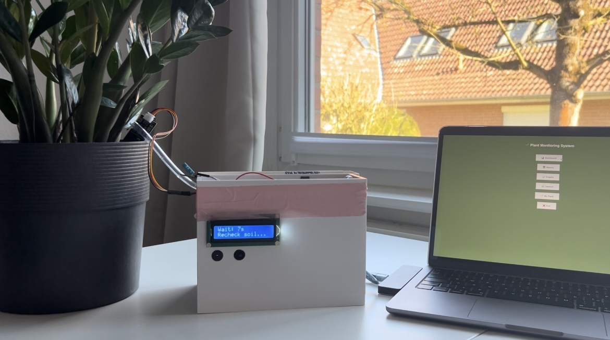
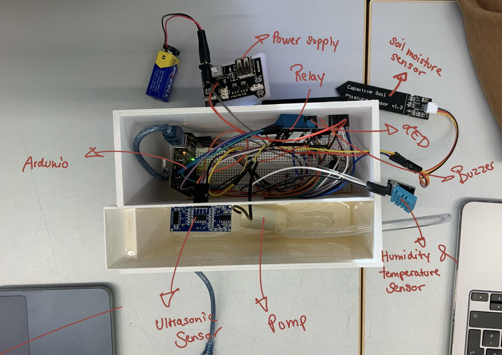
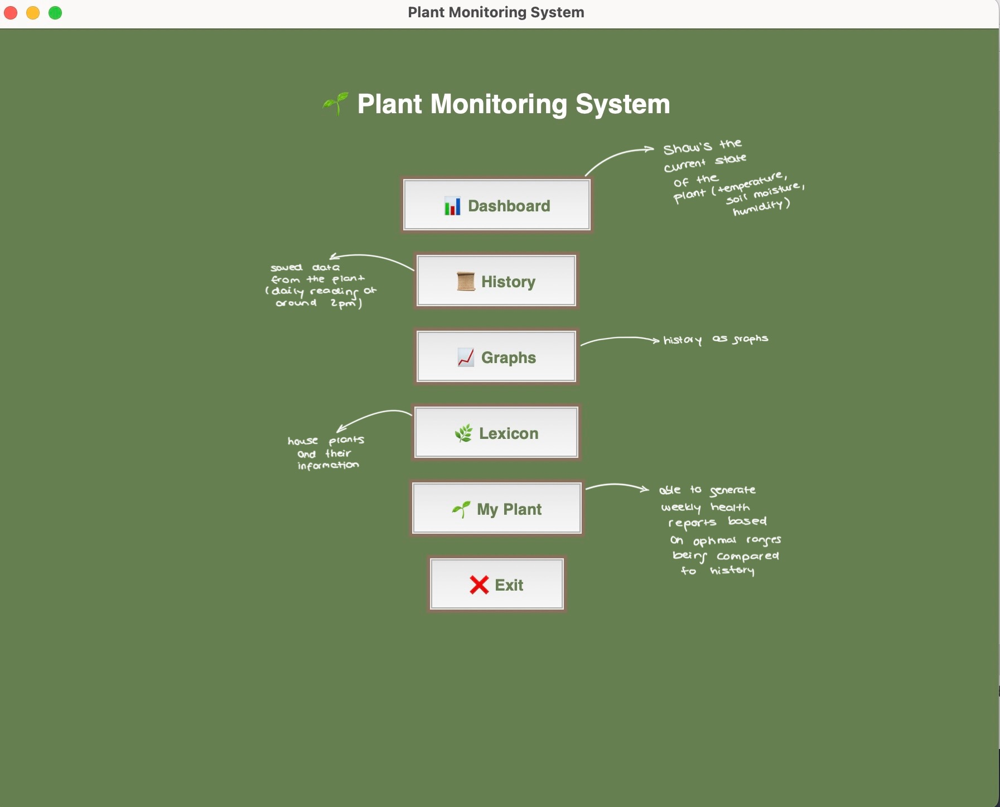
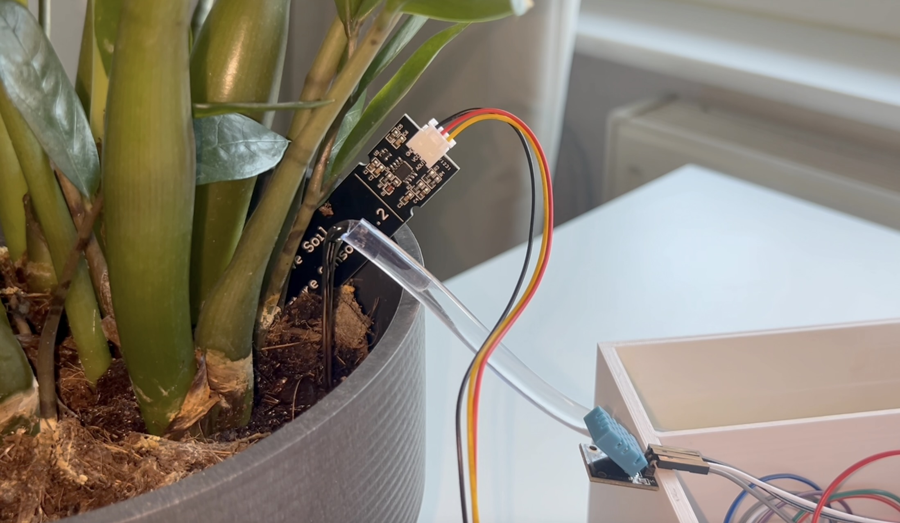

Project Overview
This project is a plant watering system that uses a soil moisture sensor to monitor the moisture level of the soil and automatically waters the plant when needed.

The system is built using an Arduino Uno, a soil moisture sensor, a water pump, and an Arduino and Python based interface script to control the watering process.

How It Works
The soil moisture sensor is placed in the soil of the plant pot. It continuously measures the moisture level of the soil and sends the data to the Arduino. The Arduino processes the data and determines if the plant needs watering. If the moisture level is below a certain threshold, the Arduino activates the water pump to water the plant until the desired moisture level is reached.

Benefits
This automated plant watering system helps ensure that plants receive consistent care, especially for those who may forget to water their plants regularly. It can also be used for plants that require specific watering schedules, making it easier to maintain healthy plants.